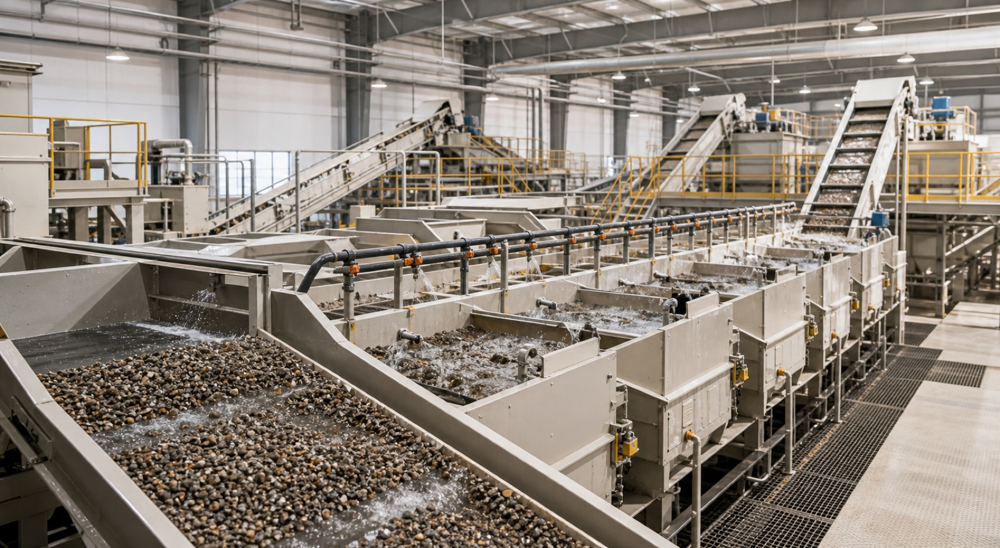
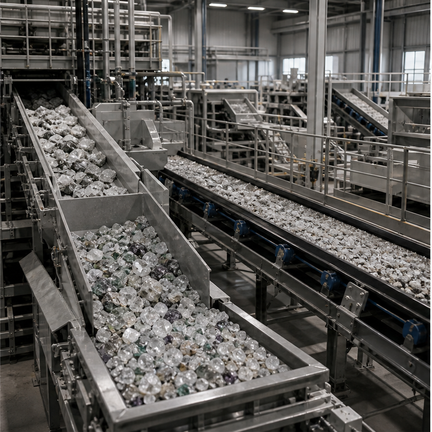

Processing Plant
Where raw material becomes structured opportunity.
Plant operations focus on throughput, separation, and a measured path toward sorting, grading, and refining. The plant acts as a vital bridge between recovery and value realization, turning field output into material that can be reviewed, documented, and moved forward with confidence.

Our processing philosophy favors simple workflows, visual control, and efficient handoffs between machinery, operators, and secure sorting points. Clarity in layout matters because the more legible the plant process becomes, the easier it is to protect both operational consistency and product integrity.
The result is a cleaner operational rhythm that supports both commercial output and the premium handling expected downstream. Well-run plant systems help reduce unnecessary loss, improve inspection quality, and create a stronger foundation for grading, refining, and final presentation.